Marked
A local-first bookmark library for Chrome and Firefox.
Save pages, posts from X, and the sentences that mattered, with your own notes and tags, read them in a clean reader, and ask a private, on-device AI how it all connects.
git clone https://github.com/shinoss/marked.git
cd marked
npm ci && npm run bundleChrome: chrome://extensions → Developer mode → Load unpacked
Firefox: about:debugging → This Firefox → Load Temporary Add-on → manifest.json
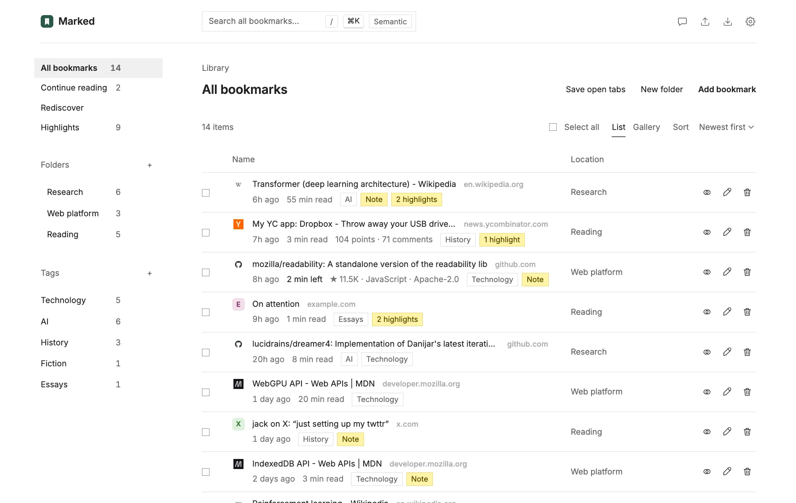
Browser bookmarks are a pile of titles you never open again. Marked keeps the why: your note, the passage you highlighted, a short abstract of the page, and tags. It all stays in your browser.
Organize and find
Folders, tags, notes, and a short abstract of every page you save. Search it all with /, or browse a gallery of page previews and posts from X.
Hacker News and GitHub links get a card instead: points and comments, stars and language, or whether an issue or pull request is open, closed, or merged.
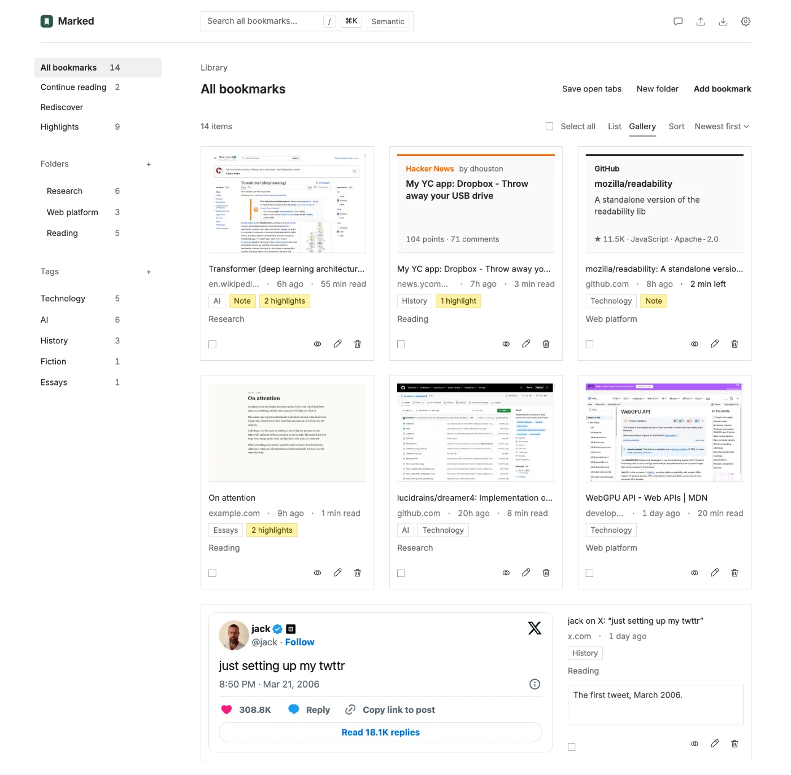
Drag and drop
Drag bookmarks and folders onto any folder, several at a time, with Undo.
In Saved order, drag between rows or press Alt+↑ / Alt+↓ to arrange a folder by hand.
Search and read every page
Marked keeps the text of every page you save, so search finds any word in it and shows the passage. For Hacker News and GitHub, it keeps the discussion or README.
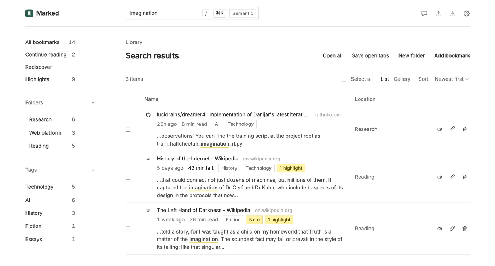
The reader
Open the saved copy from a bookmark's reading time or a search result, even after the page is gone. Pick the font, size, width, and a light, sepia, or dark page; the reader remembers where you stopped.
Highlight as you read, in color or with a note (or press H). Older bookmarks without saved text can download it from the reader, or all at once in Settings → Page text.
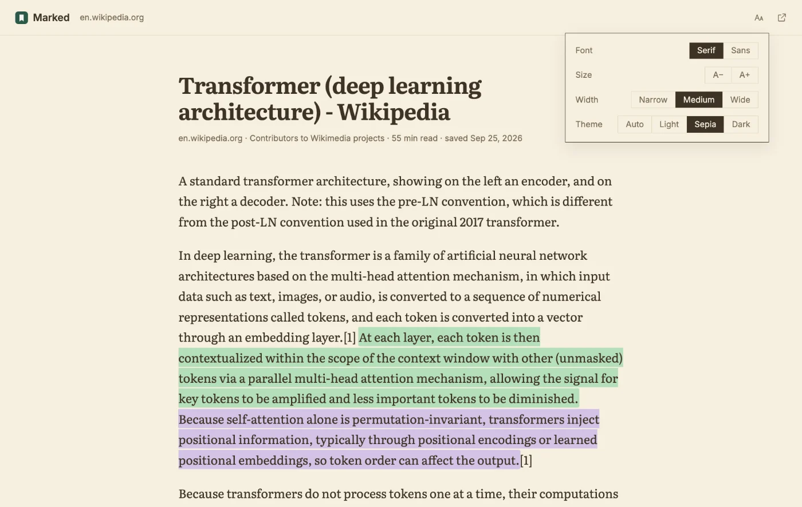
Jump anywhere
Press ⌘+K (Ctrl+K on Windows and Linux) to jump to any bookmark, folder, or tag, or run a command. Press ? for every shortcut.
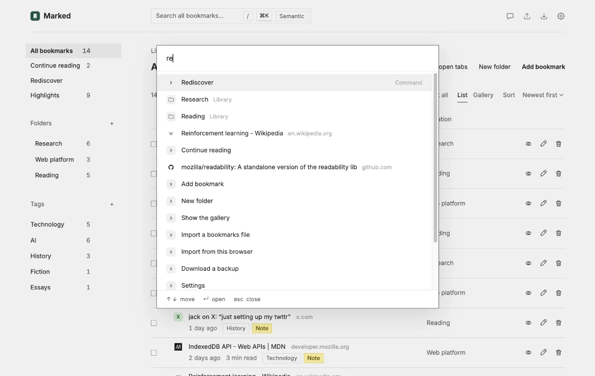
Keep it fresh
Continue reading
Pages you started in the reader, ready where you left off.
Rediscover
A few older bookmarks, favoring ones with notes or highlights.
Duplicates
Pages saved more than once, merged with every tag, note, and highlight kept.
Highlight any sentence
Select text on any page and choose Highlight (or press Alt+Shift+H). Pick one of five colors and add a note if you like.
Revisit the page and your highlights are back; hover one to see its note.
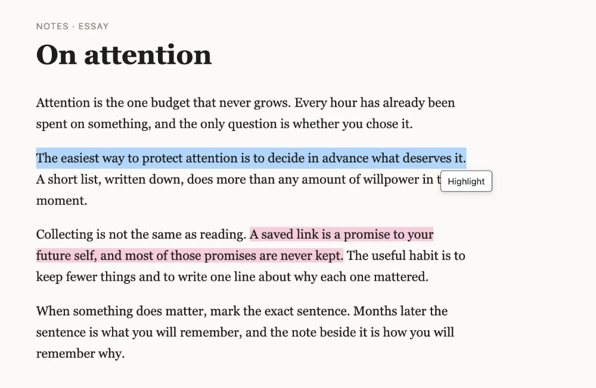
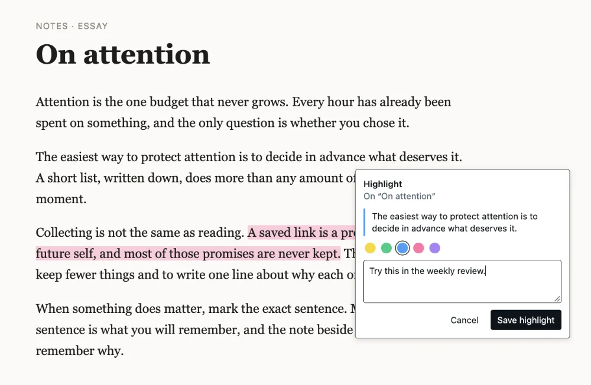
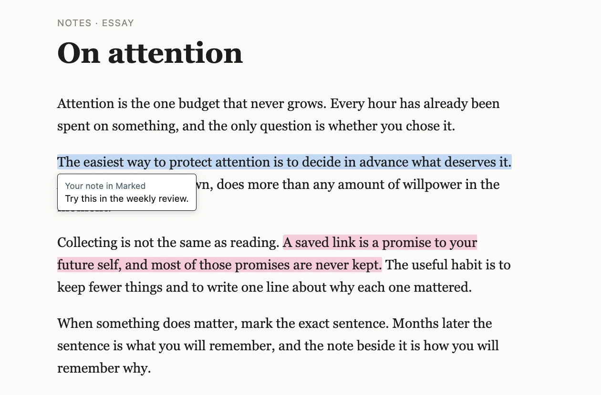
Highlights
Every highlight in one list, newest first, to search or filter by color, site, or date.
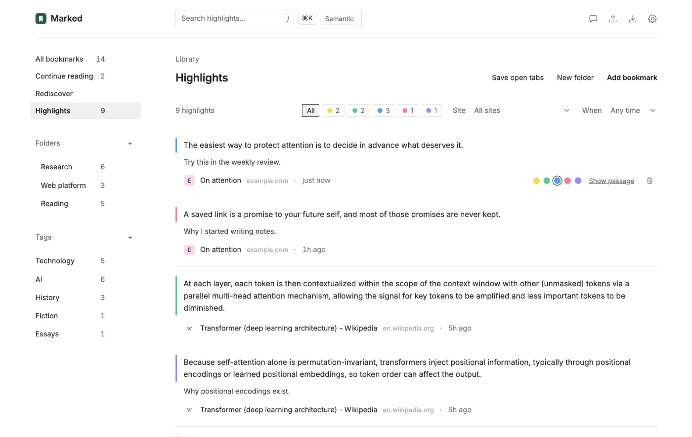
Save posts from X
Right-click a post on x.com and choose Save tweet to Marked. On a post's own page, the author's thread comes along.
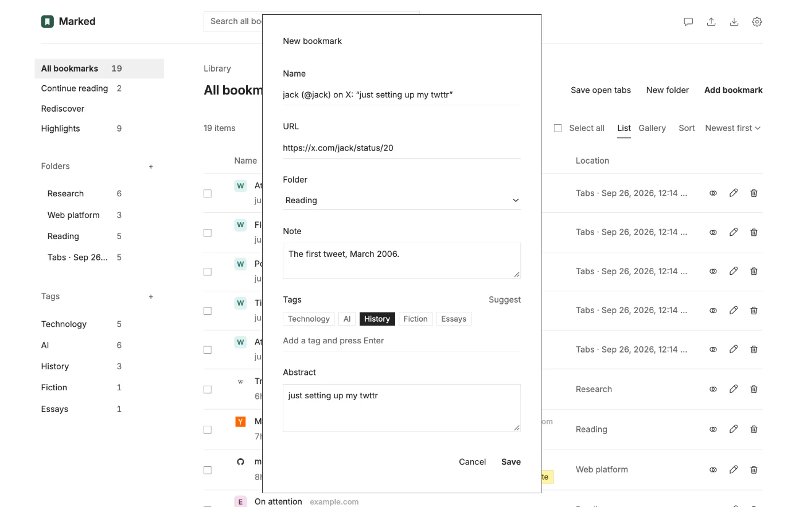
Bookmarks from X
Choose Import → Bookmarks from X while signed in to X, and every post you've bookmarked there lands in an X bookmarks folder.
Run it again later to add only the new ones.
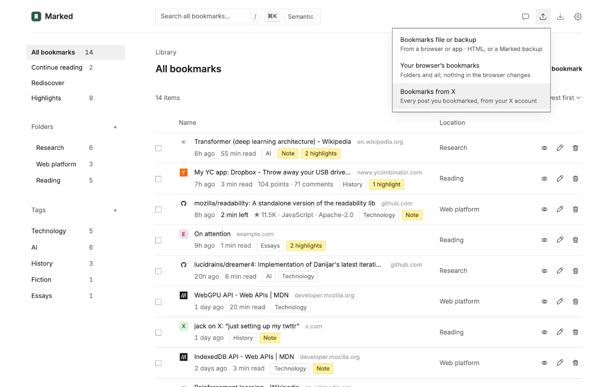
Supercharge your browsing
- Type
mkand a space in the address bar to search. - The Marked button shows ✓ on saved pages, and a related count elsewhere.
- Alt+Shift+M saves the page you're on.
- Save open tabs keeps a window as a folder; Open all brings it back.
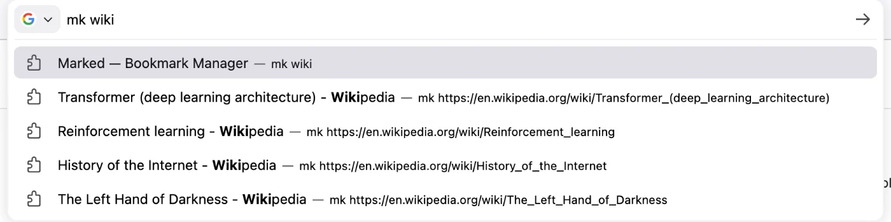
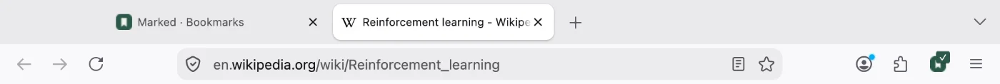
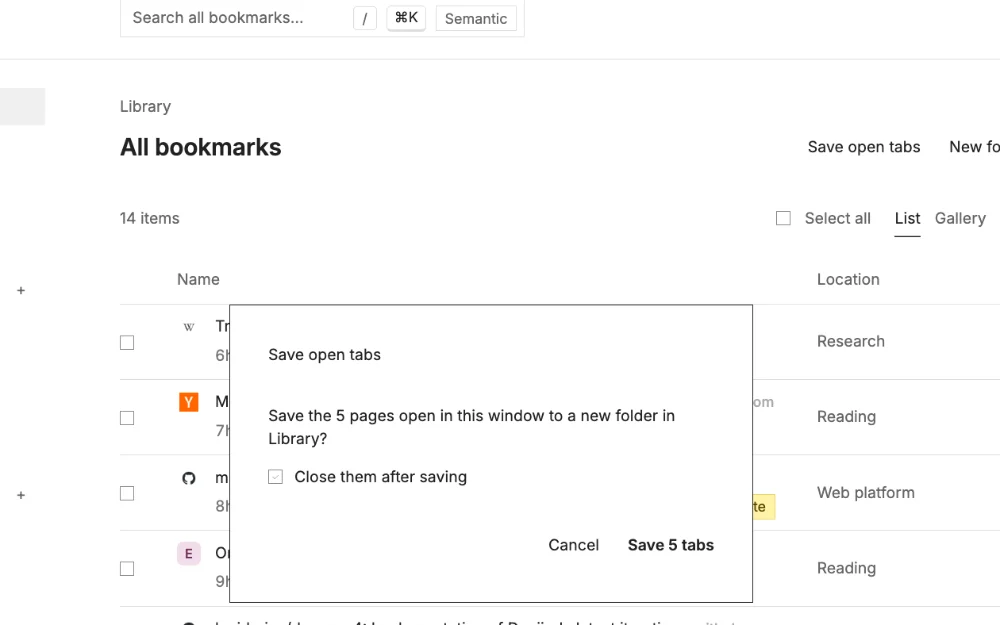
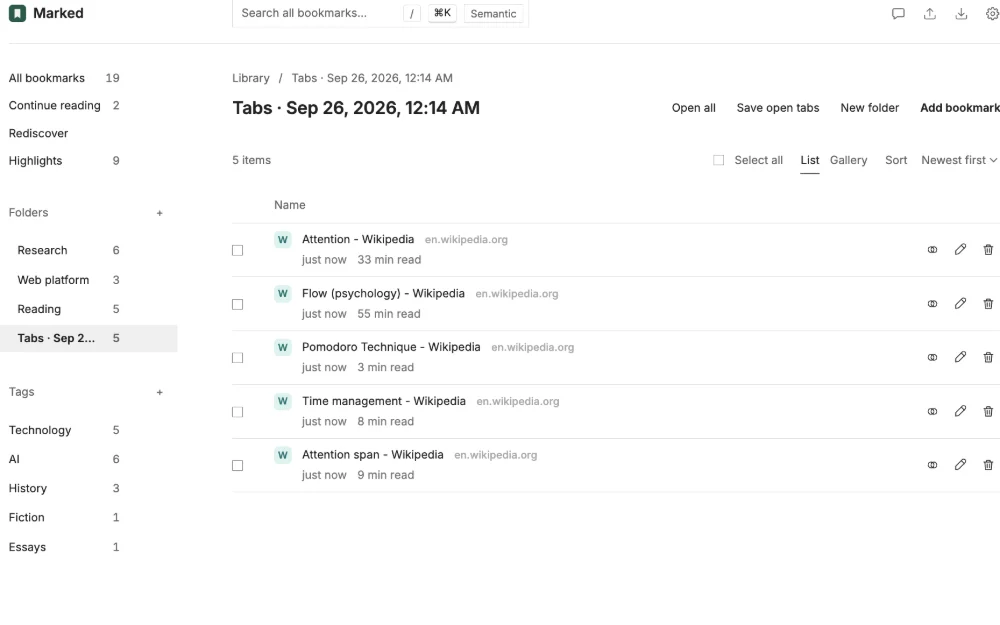
Ask your bookmarks
Chat runs Qwen3 4B on your GPU and answers with citations to your bookmarks. Nothing leaves your device.
It needs WebGPU and a one-time 2.3 GB download from Hugging Face.
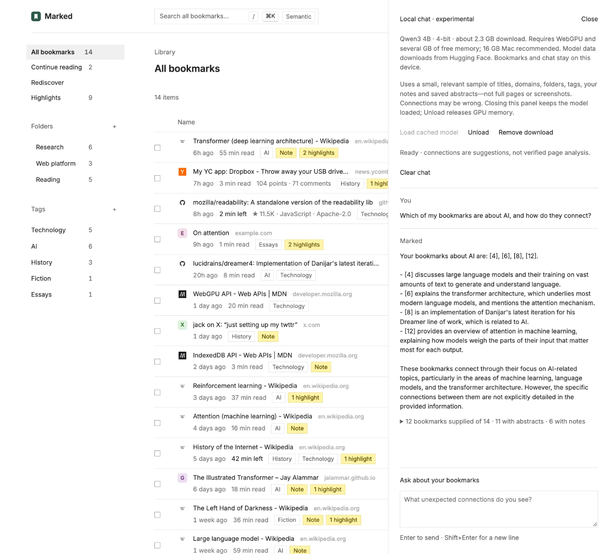
Search by meaning
Add a TypeSafe Jev API key in Settings, then click Semantic to rank bookmarks by meaning.
Optional, and only when you click
- Off until you add your own key.
- Sends your query with each bookmark's title and abstract; notes and highlights only if you turn them on.
- Never addresses, folders, or tags.
Yours to keep
On first run, Marked offers to import your browser's bookmarks, and never changes them.
Export backs up everything, page text included, to restore with Import in any browser. It also writes a standard bookmarks file, or your notes and highlights as Markdown.
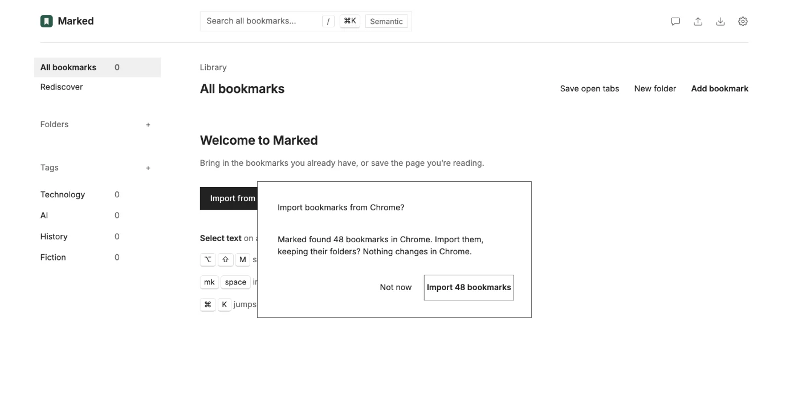
Privacy
Your library stays in your browser.
No account, no server of ours, no analytics. Marked only contacts:
- Hugging FaceWhen you download the chat model.
- XTo show posts in the gallery, and to read your X bookmarks when you import them.
- Hacker News and GitHubTheir public APIs, for a card and the discussion when you save one of their pages or download its text. No cookies.
- TypeSafeWhen you click Semantic: your query and each bookmark's title and abstract, plus notes and highlights only if you turn them on. Never addresses, folders, or tags.
- The sites you bookmarkedWhen you download page text for older bookmarks. No cookies.
Marked asks before it reads the pages you visit: the first time you open it, not at install. It uses that for the Highlight button, your highlights and ✓ on saved pages, related bookmarks, page text, and Save open tabs. It never reads what you type into forms, and nothing it reads leaves your device. Read exactly what it reads.
Questions
What do I need?
Desktop Chrome 123+ or Firefox 142+, and Node.js 22+ to run the install commands. In Firefox, an add-on loaded this way is removed when Firefox restarts.
Where is my library stored?
In your browser, in Marked's own storage. Use Export and Import to back it up or move it.
Does it change my browser's bookmarks?
No. Marked can import them once; after that, the two are separate.
Why does Marked ask to read the pages I visit?
For the Highlight button, your highlights and ✓ on saved pages, related bookmarks, keeping the text of pages you save, and Save open tabs. It asks the first time you open it, not at install, and you can turn it off in Settings → Browsing. Turned off, it leaves every page at once; what you saved stays in Marked.
On each page it reads the title, description, headings, and opening paragraphs to count related bookmarks, and forgets them when you close the tab. It never reads what you type into forms, including passwords, and nothing it reads leaves your device. Without it, you can still save pages with the Marked button, the right-click menu, or Alt+Shift+M.
What does local chat need?
WebGPU and a one-time 2.3 GB download from Hugging Face. On a Mac, use Chrome with 16 GB of memory or more. Your bookmarks and questions stay on your device.
Do I need an API key?
No. A TypeSafe Jev key only adds Semantic search.
What shortcuts are there?
/ searches, ⌘+K or Ctrl+K opens the command palette, and ? lists every shortcut. From any page, Alt+Shift+M saves it, Alt+Shift+H highlights the text you selected, and mk in the address bar searches your library. In the reader, H highlights the selection.